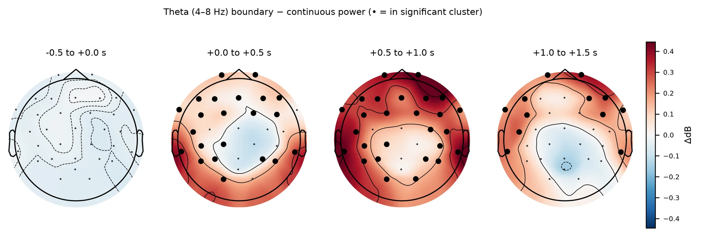
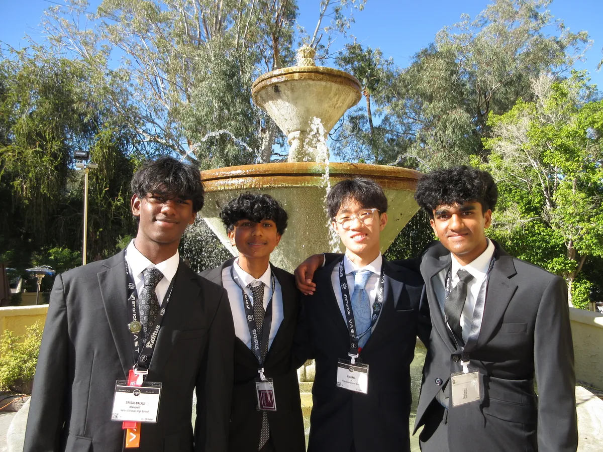

i'm a student researcher concentrating in cognitive and computational neuroscience. my specific curiosities are in memory encoding, spatial navigation, and alzheimer's. to contact me, email me here.
I work on the brain with EEG, machine learning and simulation, and I'm now curious and learning about fMRI. Most recently I analyzed EEG in the Parra Lab at the City College of New York, taking recordings of people reading and navigating virtual spaces from raw signal to models of how the brain tracks what it perceives.
The thread through my work is the human brain and body under complex or extreme conditions, studied computationally: in a lab's EEG recordings, in low Earth orbit on the ISS, and in the datasets that train diagnostic models.
Outside of research and academics, I enjoy playing volleyball, hiking, trying new foods, and drinking boba.
With eyes closed, the 10 Hz alpha rhythm is strongest over the back of the head (O1, O2); open the eyes and it fades, and blinks appear frontally. Hans Berger first recorded this in 1929.
Research
EEG and virtual-reality research on neural encoding during virtual spatial navigation
Completed · Summer 2026 · Parra Lab, City College of New York
Research internship through AEOP at CCNY, in the lab of Dr. Lucas Parra, supervised by Dr. Vinay Raghavan. I took EEG from raw recordings through preprocessing, epoching and time-frequency analysis to temporal response function (TRF) models that relate a stimulus to the brain's response, for a VR navigation study. Methods: MNE-Python, time-frequency analysis, TRF models.

Theta (4–8 Hz) power when walking through a doorway in VR, minus a matched moment mid-room, in half-second windows. Dots mark electrodes in the significant cluster.
Whose brains neuroscience studies
In progress · 2026 · Commentary Paper
An argumentative review of neuroscience's sampling problem: most findings come from Western, educated, industrialized, rich and democratic (WEIRD) samples. I follow what that does to the diagnostic tools and machine learning models global health depends on.
Effects of microgravity on L. Acidophilus growth
Poster · December 2025 · ASGSR annual meeting · Phoenix
In this project, I looked at how microgravity on the International Space Station affects the growth of L. acidophilus, a bacterium that lives in the human gut. We put the bacteria into growth media, kept them in a microcapsule aboard the ISS for a 30-day trial, and then examined how they had grown.

With my team at the ASGSR meeting in Phoenix, December 2025.
Evaluating 3D-printed radiation shielding for long-term space travel
In progress · Poster · December 2026 · ASGSR annual meeting · Washington DC
A current project testing how well 3D-printed materials, polypropylene and Spectrum HDPE, shield against radiation on the ISS compared with standard HDPE. I'm now working on post-processing, starting with a test trial using a cesium-137 source.
Tools for learning and research, mostly so other people can see what I find interesting about the brain.
MBMNeuro
A simulation of the brain and nervous system for people new to neuroscience, built on real MRI surfaces (Conte69 cortex, ICBM152 cerebellum and brainstem) with 3D neuron and synapse scenes.
LearnBySignal
An AI tool for analyzing research papers, to make dense work easier to get into, especially outside your own field.
Monet
A desktop assistant that can see your screen, so you can ask about what you're working on without copying it anywhere.
Cardiac arrhythmia prediction
A machine learning model that predicts cardiac arrhythmia from ECG signals, built as a step toward early detection of heart disease.
Say hello
If you're curious about the brain too, whether you run a lab, are working on something of your own, or just want to talk about it, write to me. I read everything.